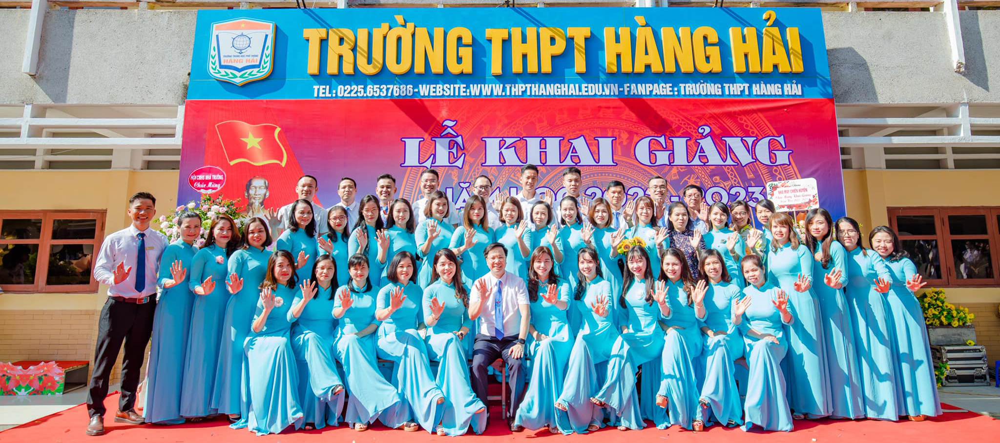

 Trường THPT Hàng Hải được thành lập ngày 21/7/1989 dưới sự quản lý của trường Đại học Hàng hải Việt Nam. Từ năm học 2010-2011, trường THPT Hàng Hải chuyển từ mô hình trường Bán công- Dân lập sang loại hình trường Tư thục. Trải qua 33 năm xây dựng và phát triển, trường THPT Hàng Hải đã trở thành thương hiệu trường THPT ngoài công lập có chất lượng cao, một địa chỉ giáo dục tin cậy của nhân dân thành phố Hải Phòng.
Trong 33 năm hoạt động, nhà trường đã đạt được những thành tích giáo dục đáng tự hào:
- Tổng số học sinh đã tốt nghiệp là trên 10.000 học sinh.
- Tỉ lệ đỗ tốt nghiệp THPT QG trung bình hàng năm là trên 98%, nhiều năm liền tỉ lệ đỗ tốt nghiệp THPT QG 100%.
- Tỉ lệ học sinh đỗ đại học trung bình hàng năm trên 90%, số học sinh giỏi cấp quốc gia là 05 giải và hàng trăm giải học sinh giỏi thành phố.
- Nhà trường đã vinh dự được Nhà nước tặng Huân chương Lao động hạng Ba.
- 02 bằng khen của Thủ tướng chính phủ.
- 09 bằng khen của Bộ giáo dục & đào tạo.
- 22 bằng khen của TƯ Đoàn TNCS Hồ Chí Minh, UBNDTP và thành Đoàn Hải Phòng và nhiều cờ thi đua của thành phố, của ngành giáo dục Hải phòng...
 Sứ mệnh: Quyết tâm xây dựng một môi trường sư phạm lành mạnh, hiện đại và thân thiện, tạo điều kiện tốt nhất để học sinh được học tập, rèn luyện và phát triển năng lực cá nhân về trí tuệ, tính độc lập sáng tạo và khả năng hợp tác. Trong quá trình đào tạo giúp học sinh:
+ Nhận ra được sứ mệnh của bản thân để lấy đó làm mục tiêu phấn đấu và cố gắng trong rèn luyện
+ Biết sống có ước mơ, hoài bão và lập kế hoạch để thực hiện được ước mơ
+ Biết cách cư xử, giải quyết được những khó khăn gặp phải trong học tập và cuộc sống
+ Có nền tảng trị thức vững vàng
+ Hiểu biết và tôn trọng những người xung quanh
+ Sẵn sàng hy sinh và đóng góp chung cho xã hội
Sứ mệnh: Quyết tâm xây dựng một môi trường sư phạm lành mạnh, hiện đại và thân thiện, tạo điều kiện tốt nhất để học sinh được học tập, rèn luyện và phát triển năng lực cá nhân về trí tuệ, tính độc lập sáng tạo và khả năng hợp tác. Trong quá trình đào tạo giúp học sinh:
+ Nhận ra được sứ mệnh của bản thân để lấy đó làm mục tiêu phấn đấu và cố gắng trong rèn luyện
+ Biết sống có ước mơ, hoài bão và lập kế hoạch để thực hiện được ước mơ
+ Biết cách cư xử, giải quyết được những khó khăn gặp phải trong học tập và cuộc sống
+ Có nền tảng trị thức vững vàng
+ Hiểu biết và tôn trọng những người xung quanh
+ Sẵn sàng hy sinh và đóng góp chung cho xã hội
Có thể nói, trường THPT Hàng Hải là một thương hiệu giáo dục ngoài công lập hàng đầu thành phố Hải Phòng. Bằng chứng là qua nhiều quá trình chuyển đổi mô hình hoạt động nhưng công tác tuyển sinh của Trường vẫn rất nhanh chóng, vẫn ghi nhận được sự tin cậy rất lớn từ học sinh, phụ huynh trong thành phố. Năm học 2022-2023, nhà trường có 1100 học sinh với 24 lớp. Tổng số cán bộ, giáo viên của nhà trường là gần 70 thầy cô trong đó có nhiều thầy cô có uy tín đến từ các trường phổ thông hàng đầu ở thành phố như: THPT Trần Phú, THPT Ngô Quyền, THPT Thái Phiên, THPT Lê Quý Đôn, THPT Trần Nguyên Hãn kết hợp với đội ngũ Giáo viên cơ hữu trẻ trung, năng động và nhiệt huyết với nghề giáo. Ngoài ra nhà trường còn mời nhiều thầy cô giỏi từ các trường ĐH như: ĐH Hàng Hải, ĐH Y Hải Phòng, ĐH Hải Phòng...Nhà trường luôn chú trọng nâng cao chất lượng đội ngũ giáo viên cơ hữu, tuyển lựa những giáo viên mới xuất sắc nhằm nâng cao toàn diện chất lượng giáo viên. Trong số đội ngũ giáo viên Nhà trường nhiều thầy cô có trình độ Thạc sĩ, Tiến sĩ.
Giá trị cốt lõi của nhà trường
– Giá trị truyền thống tốt đẹp của dân tộc được tôn vinh.
– Học tập là nhu cầu cơ bản, phát triển xã hội học tập.
– Người học luôn ở vị trí trung tâm.
– Tôn trọng khả năng và tính sáng tạo cá nhân.
– Năng động, thích nghi cao, tích cực đổi mới và sáng tạo.
– Uy tín, dân chủ, trách nhiệm và hiệu quả.
Tóm tắt giá trị cốt lõi: “ Đoàn kết – Bình đẳng – Thân thiện – Tự trọng
Hợp tác – Trách nhiệm – Sáng tạo – Khát vọng vươn lên”